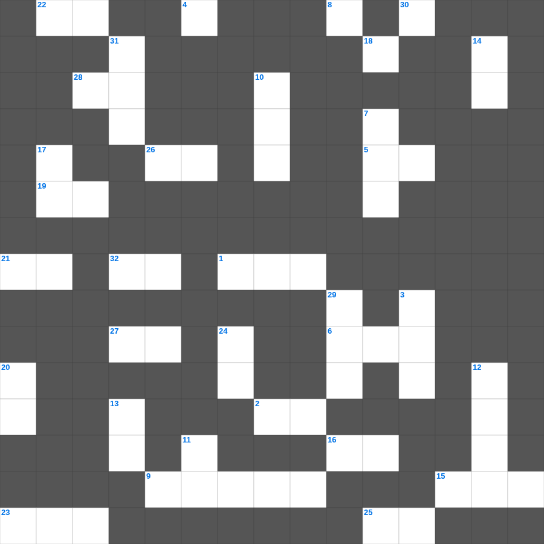

데살로니가후서 마스터 50
📌 서비스 정의
십자가로세로는 교회 주보와 주일학교에서 사용할 수 있는 성경 기반 가로세로 퍼즐 서비스입니다. 성경 인물, 사건, 핵심 구절을 바탕으로 제작되었습니다. 온라인 풀이 및 인쇄 기능을 제공합니다.
📖 데살로니가후서란?
데살로니가후서는 그리스도의 재림에 대한 오해를 바로잡고, 환난 중에서도 인내하며 신실하게 살아갈 것을 권면하는 바울의 서신입니다.
📚 데살로니가후서의 주요 사건·주제
환난 중의 인내에 대한 격려 · 주의 날에 대한 오해 시정 · 불법의 사람(적그리스도)에 대한 경고 · 거룩한 삶에 대한 권면 · 게으름에 대한 경고와 노동 권면
데살로니가후서의 말씀을 퀴즈로 배우는 데살로니가후서 주일학교 퀴즈입니다. 가로 힌트와 세로 힌트를 보고 35개의 단어를 맞춰보세요. 인쇄도 가능하고 정답 확인도 바로 되니 소그룹 모임이나 가정 예배 시간에도 활용하실 수 있습니다.

📝 가로 힌트
1. 포로 귀환 후 성전 건축이 중단되었던 기간 (약 몇 년)
2. 너희는 이것의 열매 없는 일에 참여하지 말고 도리어 책망하라
4. 사람이 선을 행할 줄 알고도 행하지 아니하면 이것이니라
5. 암몬 자손의 죄로 말미암아 그들을 심판하시되 그들의 왕과 이것들이 함께 잡혀가리라
6. 누구든지 나를 따라오려거든 자기를 부인하고 자기 이것을 지고 나를 따를 것이니라
8. 한 알의 이것이 땅에 떨어져 죽지 아니하면 한 알 그대로 있고 죽으면 많은 열매를 맺느니라
9. 요한일서 2장 6절: 그의 안에 산다고 하는 자는 그가 행하시는 대로 자기도 어떻게 해야 하나
13. 왕이 보신 큰 신상의 머리는 순금이요 가슴과 두 팔은 이것이요
15. 날이 저물고 그림자가 사라지기 전에 내 사랑하는 자야 돌아와서 이것 산의 노루 같아라
16. 옛 세상을 용서하지 아니하시고 오직 의를 전파하는 이 사람과 그 일곱 식구를 보존하시고 경건하지 아니한 자들의 세상에 홍수를 내리셨으며
19. 그들은 주의 이름으로 이것을 바르며 그를 위하여 기도할지니라
21. 베드로후서 1장 14절: 내 장막을 벗어날 날이 이것한 줄을 앎이라
22. 율법은 무엇이냐 범법함으로 말미암아 더하여진 것이라 약속하신 이것이 오시기까지 있을 것이라
23. 네가 이것의 보금자리처럼 높이 지었을지라도 내가 거기서 너를 내리리라
25. 주께서 내 이것을 만드시고 나의 모태에서 나를 만드셨나이다
26. 네 원수가 배고파하거든 이것을 먹이고 목말라하거든 물을 마시게 하라
27. 소고 치며 춤추어 찬양하며 현악과 이것으로 찬양할지어다
28. 나와 아버지는 이것이니라 하신대 유대인들이 다시 돌을 들어 치려 하거늘
30. 이것으로 우리가 주 아버지를 찬송하고 또 이것으로 하나님의 형상대로 지음을 받은 사람을 저주하나니
32. 형제들아 서로 원망하지 말라 그리하여야 심판을 면하리라 보라 이것자가 문 밖에 서 계시니라
📝 세로 힌트
3. 중단된 성전 건축을 다시 독려한 선지자 학개와 이 사람
4. 예루살렘 멸망의 근본적인 원인
4. 에스라가 음식을 먹지 않고 슬퍼한 이유 '사로잡혔던 자들의 이것 때문에'
7. 예수께서 십자가에 못 박히신 곳의 이름 (해골의 곳)
10. 요한일서 5장 14절: 무엇대로 구하면 들으시는가
11. 잠잠할 때가 있고 이것 할 때가 있으며
12. 너는 이 책을 읽기를 다한 후에 책에 돌을 매어 이것 속에 던지며
13. 바울이 로마 교회를 방문하고자 했던 주된 이유: 신령한 이것을 나누어 주기 위함
14. 모든 기도와 간구를 하되 항상 이것 안에서 기도하고 이를 위하여 깨어 구하기를 항상 힘쓰며
17. 가롯 유다가 군대와 대제사장들의 하속들을 데리고 올 때 들고 온 것: 등불과 횃불과 이것
18. 우리를 위하여 여우 곧 포도원을 허는 작은 여우를 잡으라 우리의 포도원에 이것이 피었음이라
20. 여호와는 나의 반석이시요 나의 이것이시요 나를 건지시는 이시요
24. 예레미야의 서기(비서) 역할을 했던 인물
29. 애가 1, 2, 4, 5장은 각각 22절인데, 3장만 이것 절인가
31. 오직 은밀한 것을 나타내실 이는 하늘에 계신 이것이시라
🧩 이 퍼즐에서 배우는 내용
이 퍼즐은 데살로니가후서 마스터 50의 핵심 단어와 개념을 자연스럽게 복습할 수 있도록 구성되었습니다. 주일학교 수업이나 개인 성경공부에서 학습 내용을 점검하는 용도로 바로 활용할 수 있습니다.
🧑🏫 교회 교육 자료 활용
이 퍼즐은 주일학교 교재 추천 자료로 활용할 수 있고, 주일학교 주보에 넣기 좋은 분량으로 구성되어 있습니다. 수업용 주일학교 교안에 활동지로 붙이거나, 예배 후 복습용 주일학교 공과교재로 바로 사용할 수 있습니다.
🏷️ 키워드
데살로니가후서 주일학교 퀴즈, 데살로니가후서, 십자가로세로, 성경퀴즈, 말씀퀴즈, 가로세로퍼즐, 주일학교 교재 추천, 주일학교 주보, 주일학교 교안, 주일학교 공과교재